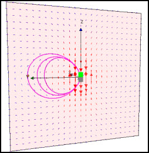
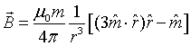
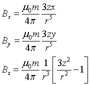

The Magnetic Dipole Field Model displays the field lines and field vectors of a dipole located at the origin and oriented along the z-axis.

In Cartesian coordinates, the position vector r is ix+jy+kz and the magnetic dipole moment m vector is km. Perform the dot product gives the following magnetic vector components:

Drag the yellow handle in the 3D view to compute the B field passing through a point (x,y,z). Select the field option to show the field vectors in plane that passes through the dipole.
The Magnetic Dipole Field Model was developed by Wolfgang Christian using the Easy Java Simulations (EJS) modeling tool version 4.3. You can examine and modify the model for this simulation if you have Ejs installed by right-clicking within the program and selecting "Open Ejs Model" from the pop-up menu.
Information about EJS is available at: <http://www.um.es/fem/Ejs/> and in the OSP ComPADRE collection <http://www.compadre.org/OSP/>.